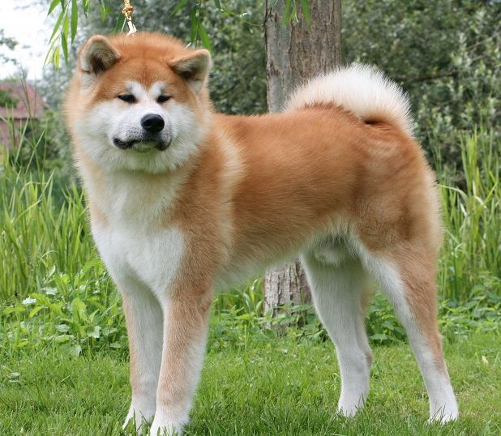
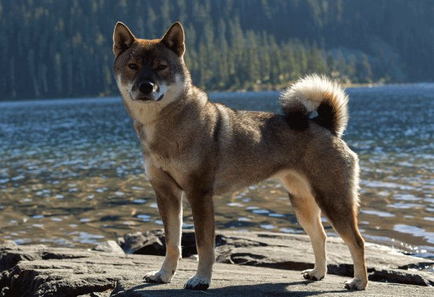

Akita Inu
Apesar do desejo natural por liderança, Akita Inu deixa-se ser liderado por um humano, mas faz questão de liderar os outros animais da casa, o que não significa necessariamente que ele se dê mal com estes, pelo contrário. Algumas pessoas podem ter algumas preocupações em receber visitas em casa, mas o temperamento do cão permite-lhe sentir quando alguém é bem-vindo ou não, pelo que interage bem com outras pessoas. De um modo geral, o Akita é um cão dócil, inteligente e corajoso, características ideais para qualquer família, e um ótimo cão de guarda.
| Expectativa de Vida | Altura | Peso | |
|---|---|---|---|
| Mínimo | 11 Anos | 23 cm | 30 kg |
| Máximo | 15 Anos | 28 cm | 60 kg |
Shiba inu
Usado hoje como cão de companhia, é ainda considerado eficiente na caça a pequenos animais. Entre outras qualidades bem vistas pelos japoneses, estão seu tamanho e a sua independência. É uma raça obstinada, auto-confiante, adora estar na rua. Shiba é uma raça que zela pelo seu território e está sempre alerta, sendo reservado para estranhos, o que o torna um ótimo cão de guarda. O Shiba no Japão é tido como um cão que traz sorte ao seu dono, ele também é o cão símbolo da Família Imperial Japonesa.
| Expectativa de Vida | Altura | Peso | |
|---|---|---|---|
| Mínimo | 12 Anos | 33 cm | 10 kg |
| Máximo | 15 Anos | 43 cm | 33 kg |
Shikoku inu
São cães valentes, fortes e suficientemente ágeis para percorrer as regiões montanhosas. De orelhas empinadas e cauda enroscada, tem ossatura considerada compacta e a personalidade resistente, de sentidos aguçados. O Shikoku foi criado principalmente para caçar veados e javalis nos distritos montanhosos de Kochi. É um cão cauteloso, corajoso com bom senso e leal ao seu dono. Este tem características mais nítidas do que a maioria dos cães japoneses.
| Expectativa de Vida | Altura | Peso | |
|---|---|---|---|
| Mínimo | 10 Anos | 43 cm | 16 kg |
| Máximo | 12 Anos | 53 cm | 25 kg |